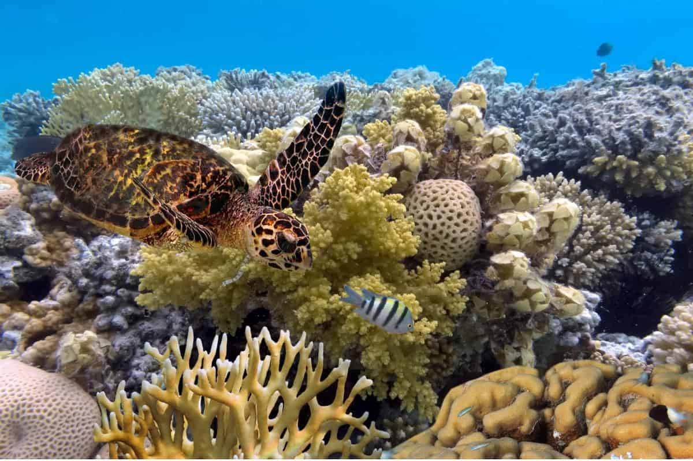
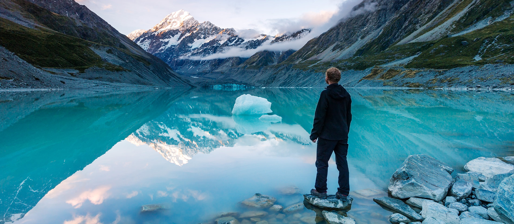
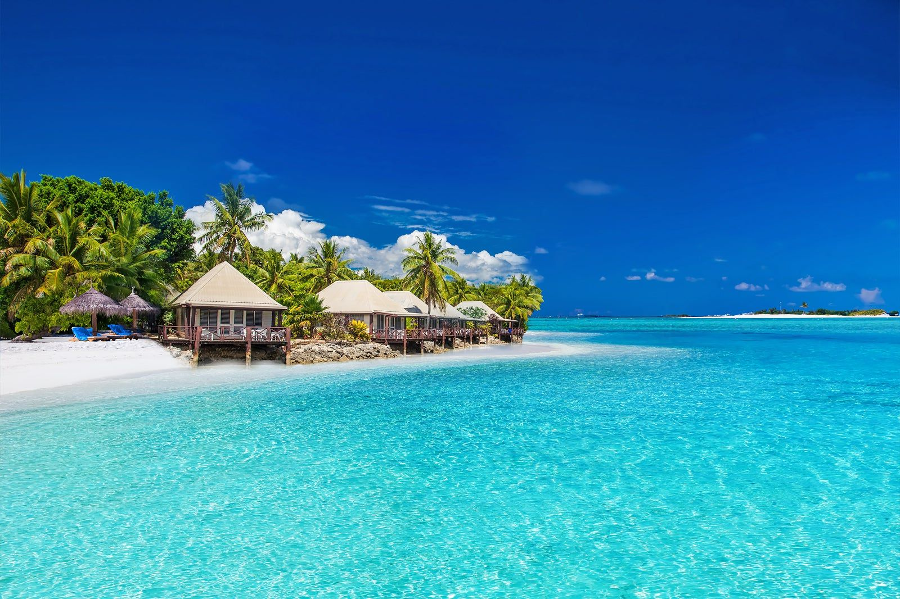

Oceania - Paradise Islands and Natural Wonders

Overview
Oceania is a vast region in the Pacific Ocean made up of Australia, New Zealand, Papua New Guinea, and thousands of island nations. It is famous for its crystal-clear waters, coral reefs, tropical beaches, and unique wildlife found nowhere else in the world.
The region is divided into Melanesia, Micronesia, and Polynesia, each with distinct cultures and traditions. From the Great Barrier Reef in Australia to the volcanic islands of Samoa and the dramatic fjords of New Zealand, Oceania offers incredible natural beauty and rich cultural heritage.
Key Facts
- Area: Approximately 8.5 million km²
- Population: Around 44 million people
- Countries: 14 independent countries plus several territories
- Major Languages: English, French, Maori, Fijian, Samoan and many indigenous Pacific languages
Popular Countries to Visit
Oceania offers world-class beaches, adventure tourism, and vibrant island cultures. Here are some of the most popular destinations:
Australia

Capital: Canberra
Australia is the largest country in Oceania and is known for its diverse landscapes, from tropical rainforests and coral reefs to vast deserts and modern cities. It is home to unique wildlife such as kangaroos, koalas, and wombats.
Visitors can explore Sydney’s Opera House, dive in the Great Barrier Reef, drive along the Great Ocean Road, and experience Aboriginal culture and heritage across the country.
Explore Australia in detail →
New Zealand

Capital: Wellington
New Zealand is famous for its breathtaking landscapes, including mountains, fjords, beaches, and geothermal areas. It also has a strong Maori cultural heritage and is a top destination for adventure sports.
Tourists can explore Auckland’s vibrant city life, enjoy adventure sports in Queenstown, visit the cultural capital Wellington, and experience geothermal attractions in Rotorua.
Major Destinations: Auckland, Queenstown, Wellington, Rotorua
Explore New Zealand in detail →
Fiji

Capital: Suva
Fiji is a tropical island nation made up of more than 300 islands. It is known for its warm hospitality, turquoise waters, and vibrant coral reefs, making it a popular destination for relaxation and water activities.
Visitors can relax in Nadi, explore the capital city Suva, visit Lautoka’s sugar cane region, and discover traditional villages and beaches in Sigatoka.
Major Destinations: Nadi, Suva, Lautoka, Sigatoka
Explore Fiji in detail →
← Back to All Continents